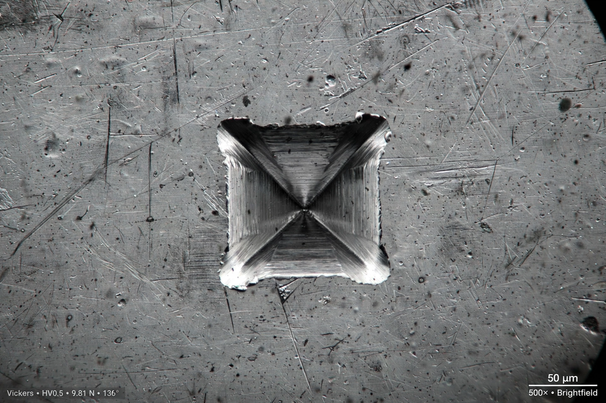

The Vickers hardness test was developed in 1921 by Robert L. Smith and George E. Sandland at the British engineering company Vickers Ltd as an alternative to the Brinell method to measure the hardness of materials. The Vickers test is often easier to use than other hardness tests since the required calculations are independent of the size of the indenter, and the indenter can be used for all materials irrespective of hardness.
The basic principle, as with all common measures of hardness, is to observe a material's ability to resist plastic deformation from a standard source. The Vickers test can be used for all metals and has one of the widest scales among hardness tests.
The indenter is a square-based pyramid made of diamond, with an angle of 136° between opposite faces. It is pressed into the surface of the specimen under a known load, typically between 1 gram-force and 100 kilograms-force. After the load is removed, the two diagonals of the resulting square indentation are measured under a microscope and averaged.
The Vickers hardness number (HV) is calculated from the applied force F (in kilograms-force) and the mean diagonal d (in millimetres) of the indentation:
HV ≈ 1.8544 · F / d²
Results are reported in the form xxxHVyy, where xxx is the hardness number and yy is the load used, for example 440HV30, meaning a hardness of 440 measured with a 30 kgf load.
With small loads (microindentation), the same geometry is used to measure the hardness of individual phases, coatings, thin films and small components. Because the indent is small, specimens require a polished surface finish. The test is standardised under ASTM E384 and ISO 6507.
Approximate conversion tables exist relating Vickers hardness to Brinell and Rockwell values and to tensile strength, though conversions are empirical and material-dependent.